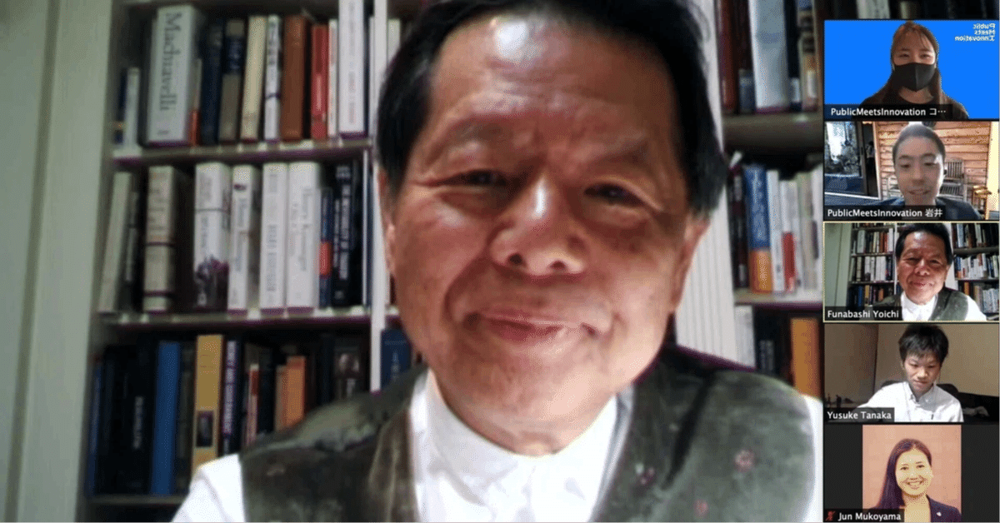

【Public Notes】とはミレニアル世代のシンクタンクPublicMeetsInnovationがイノベーターに知ってもらいたいイノベーションとルールメイキングに纏わる情報をお届けする記事です。
PublicMeetsInnovationはこの度、今後50年の思想・価値観を提示するとともに、ルールメイキングやイノベーションの視点から現在の社会課題に切り込んでいくことを目的とした新たな組織「PMIThinkTank」を立ち上げました。
PMIThinkTankを立ち上げて、今後活動していくにあたり、「シンクタンクの父」と呼ばれている船橋洋一さんにシンクタンクの今、そしてこれからについてお話を伺いました。
シンクタンクも新しいダイナミックスを持つべき
船橋さん：石山さんに2019年9月の東京大学でのシンクタンクの政策起業家シンポジウムにパネリストでお越しいただいた時から、取り組む課題は別であっても、同じようなことを考えている仲間がいるんだなとつくづく思いました。
あれから1年半以上経ち、さらに照準が定まって、田中さんという方をPMIThinkTankのリーダーとして動き出しているのはとても素晴らしいなと思います。
私どもは来年10周年を迎えるんですけれども、去年からPEP（Policy Entrepreneur's Platform）を東大のシンポジウムを皮切りにして始動していますが、そこでの新しい試みなどもお伝えしながら、シンクタンクがなぜ今日本で必要なのだろうか、今までのシンクタンクという括られる言葉とは相当違うような新しいダイナミックスというのをシンクタンクも持たざるを得ないし、持つべきだということをお話できればと思います。
全体をつかむということができないから戦略もできない
船橋さん：去年の秋から今年にかけて新型コロナウイルスの蔓延している中で、私どもは新型コロナ対応・民間臨時調査会、略してコロナ民間臨調というのを立ち上げまして、日本政府のコロナに対する取り組みに対してアプローチしていきました。
https://apinitiative.org/project/covid19/
今から1年以上前、昨年の1月,2月から7月ぐらいまでの第1波に絞って、日本政府の対応がどうだったのだろうかということを検証しました。調査・検証報告書も出したんですけれども、その時に衝撃的に感じたのが厚労省を中心とした日本政府の取り組みの問題点はたくさんあるということです。
一つがデジタル敗戦と言われるような、技術を使ってデータを収集管理して分析して政策に生かしていくということができなかったことです。
現在はまたワクチンの問題もあります。
日本の開発生産体制というのが実はこの40年間でほぼ壊滅的になっていて、国民の生命と健康を守るという政府の最も根本的な、本来的な任務役割が十分に果たせないという現状があります。
この危機というのはいろいろな形での表現の仕方があると思いますけども、基本的にいざという時、有事の時に備える。備えたとしてもそれを実行するようなこともできない。備えも不十分だということ。備えが不十分だから対応の選択の幅が狭まってしまう。
例えばPCR検査などはその典型です。
全体をつかむということができないから戦略もできない。
全体をつかむというのはデータがなければつかめない。データそのものが取れないという不具合が重層的に、構造的に溜まっているわけです。
ですからそういうことも含めて様々な教訓をここで学んで、冬には第二波が来るかもしれないと予測して、それまでに間に合わせようと、去年の夏をかけて約100人ぐらいの方々にヒアリングをして、それで昨年10月の初めに報告書を出しました。
政府が全ての回答や正解を持っているという神話
そこでの問題の一つに政府が何から何まで回答を持っている、政府が正解を持っている、政府が何でもできると、これは神話…幻想だということです。
これは日本政府だけでなく、どこの政府も同じで、歴史的にいつもそうです。
一方政府は、新たな考え方とか、挑戦するとか、競争のコンテスタブルな状況に置かれるということを非常に嫌がる。
検証そのものが政府にとってチャレンジになるので、自分のキャリアを傷つけることになりかねないから、そもそも歓迎しない。
そうなると新しいアイデアは入ってこないし、新しいアイデアを出しにくいということでイノベーションが起きにくい。
グローバル化の時代になって、特に最近の第４次産業革命でものすごく大きい技術のブレークスルーが同時に起こって、それぞれが共鳴して、共振していくというような時代に、社会のニーズ・個々のニーズをどういうふうにアドレスして、対応して、それに的確に応えていくかというのが、マイナンバーひとつとってみても全くできていない。
もう一つは民の技術革新が先に進むわけですから、どのような形で民と共同作業をするか、パートナーシップを組むかということです。これがいわゆる業界団体であるとか、役所の原局と紐づいた形でのそれぞれの業界団体、言ってみると補助金の受け皿あるいは天下り先の受け皿、業界のカルテル的な裏調整とか言うような形でしかない。
官僚機構の方も霞ヶ関の場合はだいたい1,2年で交代していきますから、2年やったとしてももう最初の半年は慣れるかどうかで必死になる。あとは国会答弁で粗相がないように防衛に必死になっている。
つまり行政は「そもそも論」をやる場ではありません、というのが現実なんですよね。
それをどう変えるかというと、外からの新しいアイディアと、外とのパートナーシップそれを使うことによってバネにして、それで中を変えていくしかありません。
それからアイデアにしても知的なフレームにしてもフレームワークにしても新しい理論にしても、スパーリングのパートナーが必要だと言うことだと思います。
そのためには独立した民間のシンクタンクが必要です。
なかなか政府系のシンクタンク、あるいは企業も大きい企業の系統のシンクタンクということになると、親元の利害関心という局所的な関心、部分的な最適解と言うことを一義的に求められてしまう。政府にとっての全体最適解は何か、政府の場合は国民全体が顧客ですから、そういうことに向き合う機関が本当に日本では少ない。
考える、議論する、そして様々なステークホルダーを集める場。
これを我々は「Convening Power （コンビーニング・パワー、主宰する力）」と呼んでますけれども、それがますます必要になってきている。
特に技術のイノベーションは試行錯誤でしかないですから、技術を社会実装する時には倫理であるとか、社会規範であるとか、住民とどういう形でコラボレーションするかということでしかありえないわけで、空中庭園作るわけじゃないんです。
そうなってくるとやはり社会規範、倫理、それからそれぞれのコミュニティの人が大切に思っている価値観とかそういうことも含めての合わせ技になってくるので、コンビーニング・パワーが必要になってくるわけですよね。
ですからやはり非常に機動力があって、小回りが利いて、それで誰とでも話ができて、これからも自分のほうからイニシアティブを発揮して声をかけていく、人のことに耳を澄ますというようなそういう場、議論できる場が必要。そして、一方最後はやっぱりオフィシャルな官僚、それから政治家に繋いでいくことも必要。
そこでやはり政治の決定過程のところまで流し込んでいくような「政策起業力」、単に政策を研究します、立案しますだけでなくて、政策を実施するまでのプロセスが重要です。ありとあらゆるプロセスを試行錯誤しながら、最後の政策実現していくところまで見届けていくという、ドゥー・タンク（Do-tank）の領域も含めた機動力というのがますます必要になってきているのかなと思います。
社会実装とは、社会と実装すること
ここで話は社会実装の話に。
船橋さん：「社会実装」という言葉をよく使うんだけれども、この「社会に実装」するというより、「社会と実装する」というべきだと思います。
つまり合わせ技というか、一緒になってやることなんだと思います。
特に社会実装というとどうしても供給者サイドの目線になってしまうので、需要サイドのニーズというのをもっと的確に捉えて、そこからそもそも何のために、理想はなんだろうかということを最初の段階でのレクチャーをマルチステークホルダーの方々と話すところから始めないとなかなかうまくいかないということなんですよね。
中立的なシンクタンクとして、どうDoに繋げて、見届けていくか
船橋さんのお話を受けて石山自身が課題と感じていることの話に。
石山：ここで私が個人的に課題と感じていることを話したいなと思います。
PMIはthinkであり、中立であるシンクタンクを目指していきたいが、どうDoに繋げていくのか、見届けていくのかがすごく難しいなと思っております。
※画像出典：シンクタンクとは何か-政策起業力の時代 (中公新書) 2019
先日リリースしたミレニアル政策ペーパーもかなりSNSで反響があり、その中で政党の方も興味を持ってくれて、実際に意見交換をしたいとオファーも頂きました。
ミレニアル政策ペーパー 本編スライド：https://pmi.or.jp/thinktank/millennial_paper/family/slide.pdf
ただやはりPMIは官僚をコアメンバーとして抱えているので、どこまで政党や政治の現場に持っていくかはセンシティブな問題があると思っています。
結論としては、説明はすべきではあるが、家族や夫婦にまつわることに関してはこうしてくださいといったお願いは基本的にしないし、こうあるべきということも言わない。そういう形で説明するということに留めた方がいいんじゃないかという話になりました。
こういった家族などの従来型のリベラル寄りなものに関して、我々はリベラルでもあると思うんですが、すごくリベラルな団体に見られる動きではないんですね。そこの見え方が難しいと思っています。
これが最後なんですけれども、目指すところとしては具体的な法律のここを変えるというより、切り口が政策の中に盛り込まれるということを目標にした提言を出していくところを考えています。
田中：官僚をメンバーに取り込みつつ、この活動を続けていくことのメリットとデメリットの両方があると思っています。
デメリットは石山から申し上げたとおりですが、一方、一連の政策立案プロセスの流れの中で、いつ、誰に、どのように持っていくかという感覚もシンクタンクには必要だと考えます。
まさにその部分で、官僚を取り込むというところをどうこれから我々が強みにしていけばいいか、どう考えていけばいいかということをお伺いできるとありがたいと思います。
またこの関連でもう一つ質問がありまして、いま霞が関を退職する官僚が続出しています。
霞が関の中で、もどかしさを感じてむしろプレーヤーとして、例えば民間企業のロビイストとして働いたりという動きが出てくる中で、船橋さんもご著書において、霞が関自体の問題点というところを多く指摘していらっしゃったと思います。
残念ながら米国と違って、日本では政策立案に直接関わったことのある経験者自体がまだまだ少ない中で、官僚・元官僚をこれから社会がどう生かしていくのかという視点も必要なんじゃないかと思っています。
退職する官僚が増える中、その人材のプールを我々がどう捉えていけばいいのか、どう生かしていけばいいかということについての方でご意見があればぜひお伺いしたいなと思っています。
これからは出入り自由な、公募制の時代に入っていく
船橋さん：いずれも極めて切実な課題です。
PMIは石山さんがおっしゃったように具体的な提言の一歩手前の切り口のところで止める。官僚の同志とそういう形で作り上げていく。これは一つのイノベーションだと思います。
だからそこを一回徹底してやってみたら面白いんじゃないかなと。
シンクタンクみんながみんな同じようなシンクタンクである必要はないし、私どもも民間の独立シンクタンクとして、非常に強い信念を持ってやっていますが、政府系のシンクタンクがダメかというとそんなことはないし、政府系のシンクタンクは政府系のシンクタンクとしての役割もあります。
防衛研究所みたいに非常に世界のランキングも高く、非常に優秀な経験を持っていて、優秀な専門家を抱えているところもありますし、企業のシンクタンクもなかなかのシンクタンクもあるわけですから、それぞれでいいと思います。
まず官僚と一緒にやっていくというのは、どこまでいけるかわかりませんけれども、特に今のようにマイクロターゲットで個々の官僚をソーシャルネットワークで攻撃するとか、そういうような非常にこのメディア状況が危険な状況の中で、どうやって個々の官僚を守るのかと言うようなことも考えなきゃいけないと思うんですよね。
これが一つ。
また辞めていく官僚はもう止められないと思います。
官僚を辞めてまた官僚に戻るという方々も相当出てきていますし、今度のデジ庁のように初めから500人のうち100人が民間から、特に専門職、技術系統の人が入っていくと言うような時代にもなりました。
またすでに金融庁などは４分の１がいわゆる資格ではなくていわゆる政治任命なんですよね。
ですから特にブロックチェーンだとか、そういう技術革新が激しいところというのはやはり外から持ってきてということをやらざるをえない。
そういう人たちが非常に公のパブリックマインドを持って、技術の専門職だけではなく自分はもっと政策の方もやっていくんだ、と言う人も確実に出てくるでしょうし、そうした流れは大歓迎です。
ロビイストやコンサルに行ったり、あるいは民間の企業に入って、政府の中だけにいたのでは十分に取れない最先端を取り入れていく。そういう気持ちを持ってらっしゃる方も多いんですよね。
だから民間に出て、最先端のところで学んで、それをまた官僚として活かしていくというような出入り自由な、公募制の時代に入っていくと思います。
それは大歓迎ですね。経産省なんかも部分的に実験を始めてますしね。
そういうときにシンクタンクが、そういう官僚たち、あるいは官僚を辞めた人たち、また官僚から政府に入っていこうという人達の集いの場となるとか、研究会をいろいろ作って切磋琢磨するとか、そこで政策提言していくとかをすればいいと思います。
私どものシンクタンクはやっぱり最後は政策提言につなげていきたい、提言につなげていくだけではなく、これはというものは政策実現まである程度併走して、伴走してそれで政策起業力を発揮して、一歩でも日本でもその実現に向けて後押ししたいなという思いです。
ポリティカル・プロセスの最後は相当入らなきゃいけない。それは覚悟とリスクマネジメントの両方が必要になります。まだまだ我々は小さいですから、戦線を広げると危ないので非常に絞ってますけれども、そういう考え方でやっています。
ですからPMIの考え方は素晴らしいと思うし、ぜひ官僚の方々とそういうような場で何か新しいものを生み出す、実験していただきたいなと思います。
若い世代に意思決定を任せて、決めて、作っていく
船橋さん：政府もやっぱりこのままではダメだな、まずいなと感じているんです。ですから防衛大綱に、グローバルにシンクタンクが活躍できるようにということを書いているぐらい。
※平成31年以降に係る防衛計画の大綱について「国内外の先端技術動向について調査・分析等を行うシンクタンクの 活用や創設等により、革新的・萌芽的な技術の早期発掘やその育成に 向けた体制を強化する。」p.23 https://www.mod.go.jp/j/approach/agenda/guideline/2019/pdf/20181218.pdf
そういう意味では新しい最先端との共同研究、その中に日本も入っていないと危ないということを政府も非常に感じているのではないでしょうかね。
石山：私たちとしては若い世代の問いかけも大事だと思っています。
船橋さん：やはり世代の問題というのはとても大きいと思います。だから新しい時代にしがらみのない人達が、そもそも、ゼロから考えていくということですから、柔軟に、そしてリベラルとかなんとかそういう立場とか何とかは外して、個々のそれぞれのものを考える人たちが集って、自由に議論してというような場はものすごく貴重です。
だから若い世代にある程度、意思決定を任せて、決めて、作っていく。
ハク付けとか権威付けとかどっかの事務次官経験者をもらおうとか、上の方に大御所を配置するとか一切必要ないんで、それが一番いいと思います。
プログラムディレクター、プログラムオフィサーの重要性
田中：2011年のイニシアチブのときから様々な報告書やレポート、提言とされていらっしゃると思うんですが、それぞれのプロジェクトのインパクトをどのように評価していらっしゃいますか。
特に自分たちとしては議員立法の少なさだったり、そもそもポリシーウインドウ（政策立案過程への参入窓口）自体がアメリカに比べてかなり狭いなという実感もあります。
それ自体を変えていく、仕組み自体を変えていかないといけないなと思いつつ、今とりあえずこの現状を前提とする中で船橋さんが提言書やレポートを出されて、その政策に反映させるプロセスの中で一番課題に感じていらっしゃる部分はどういったところになるのでしょうか。
船橋さん：一番インパクトがあったのは実は個々の政策提言より、検証でしたね。
民主党の政党ガバナンスの検証であり、それから今回のコロナ。これが一番多く取り上げられたし、いろいろと引用もされました。
しかし具体的な政策提言で最もインパクトを及ぼしたかった「人口蒸発「5000万人国家」日本の衝撃」。これは、具体的政策としては自信作として世に送り出したんですが、思うようには行かなかった。
これは本当に衝撃でしたね。
はっきり言うと、これ以上ないというメンバーで臨んだし、それだけの深い勉強も研究も行なった。
加わってくださった研究者の方々、学者の方々は最高だった。
委員会も日本学術会議の会長の大西隆さん、財務省の事務次官だった勝栄二郎さん、日本銀行の総裁だった白川方明さん、環境省の事務方で小林ヒカルさん、ライフ生命の出口さん、クロネコヤマトの社長の木川さんと本当に素晴らしいメンバーだったし、いいものができたけれどもインパクトの方は福島原発の事故調報告書やコロナ民間臨調に比べて弱かった。
だから政策提言は本当にいいものを出してやってもなかなかすぐにはインパクトが出ない。
僕らのシンクタンクはソーシャルネットワークの使い方が下手だったなどの反省材料もあって、今はそこは相当工夫するようにしてますけど、まだまだアメリカのシンクタンクに比べると弱い。
グローバルな発信ももちろんやってますので、どれも英語でプロダクトを出すようにしていましたから効果は出始めているものの、ここもまだまだこれからですよね。
財力、それらもありますけど一番重要なのはプログラムディレクター、プログラムオフィサーという職業が日本では確立していないというところはありますね。
今とても優秀な30代の方が来てくださって、それで僕らはものすごくパワーアップしてるんだけれども、アメリカにはプログラムを彼・彼女に任せておけば確実に最後は作品になっているし、どの人をどういう風に招いて、ファンドレイズの方もちゃんと手当てしてくれる、エクスパティーズを持っている職業集団がいるわけですよね。
財団に関わってきた人の関係も常にきちんとしておくとか、説明責任もきちっとペーパー・ドキュメントでできるとかですね。特にインパクトの計測評価というところをしっかりとした形でデータとして示すことができるとか、その辺のパッケージですから、この辺はこれから僕らはシンクタンクのエコシステムを作っていくときにとても必要なことになるんじゃないかと思っています。
田中：まさに我々が先日リリースした家族ペーパーのときも誰にデリバリーするのかというところはかなり意識するようにしていました。
石山だったりクリエイターの人間が入っているので、一般市民にどれだけ届けられるかという視点と政治家に届けられるかという２つの観点で考えたときに政治家の方は政治家の方で課題がありつつも、一般の方々にSNS等を通じてどう広げていけるかというのは我々の強みになり得るのかなと感じたところだったので今のお話を聞けて非常にエンカレッジされました。
船橋さん：イギリスもアメリカもそうですが、シンクタンクにはオモテとウラがあって、表はやはり一般の市民の方々、広範な方々にプロダクツにしてもメッセージにしてもちゃんとその研究成果を伝えるということ。
同時に静かにこの目立たない形で政策当局者ときちっと対話ができる、意思疎通ができる。彼らも我々の招きに応じてきて何らかのインセンティブを感じるようなそういうような存在になれるかどうかということがあると思います。最後は信頼感ですね。
ですから検証も信頼感がなければ検証できないので、検証っていうのは必ず当事者に話を聞いて、それを踏まえて検証するっていうのが検証なんで、そうでなかったら書物だけでそれを引用して終わっちゃいますから検証にはならないと思ってますから、やっぱりクリティカルな検証力と相互の信頼感かなと思います。
まとめ
今回、船橋さんのお話をお伺いして、今後の課題について多くの示唆に富むご指摘をいただきつつ、シンクタンクの可能性を感じる時間になりました。
船橋さんがおっしゃった、外からの新しいアイディアと、外とのパートナーシップを活用し、中を変えていくこと、社会規範、倫理、価値観といった目に見えないものも含めて全体を考える視線を持てる立場であること、そして考える、議論する、様々なステークホルダーを集める場を主催できること。これらはまさにPMIシンクタンクの強みになりえる要素だと痛感します。
これからもPMIシンクタンクの活動を応援いただけると幸いです。船橋さん、お忙しい中ありがとうございました！（PMIシンクタンク編集部）